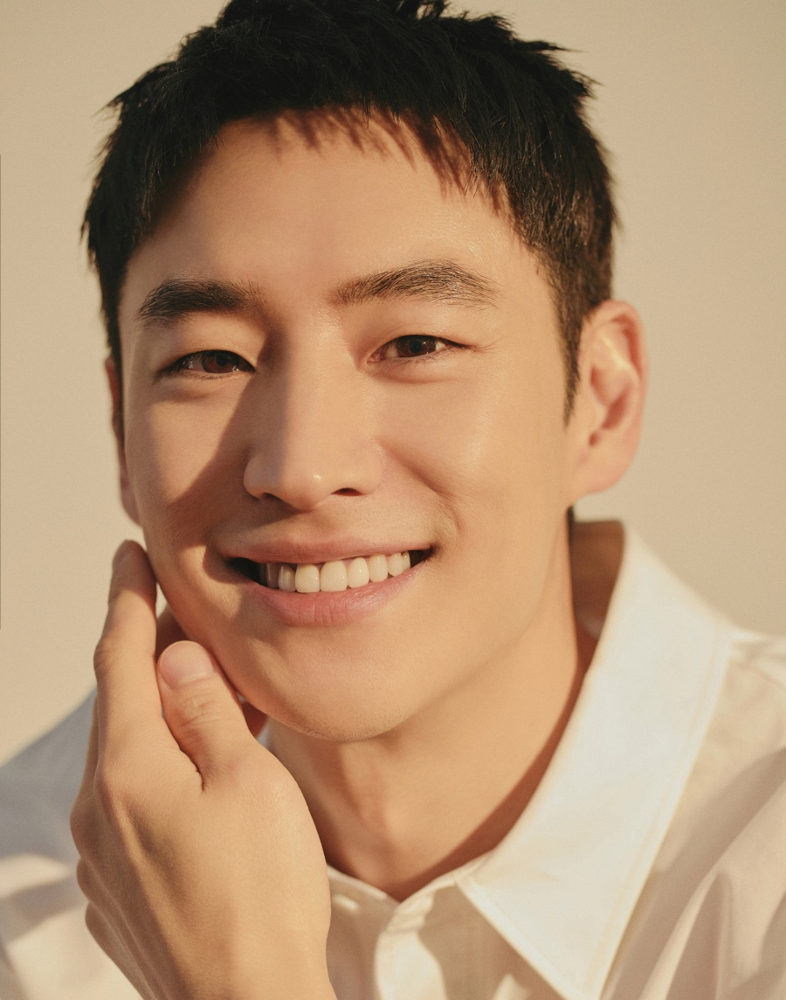

이제훈
출연 영화 보기

출생
1984년 7월 4일 (38세)
서울특별시 종로구 효자동
국적
대한민국
본관
함평 이씨 (咸平 李氏)
신체
177cm|B형
학력
송현고등학교 (졸업)
고려대학교 서창캠퍼스 (생명정보공학과 / 중퇴)
한국예술종합학교 연극원 (연기과 / 중퇴)
병역
경찰청 의무경찰 수경 만기전역
(2012년 10월 25일 ~ 2014년 7월 24일)
종교
무종교
소속사
컴퍼니온